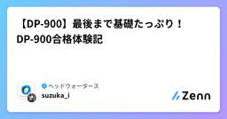

ヘッドウォータースのフィード
https://zenn.dev/p/headwaters
株式会社ヘッドウォータースのテックブログです。 AIエージェント、生成AI、LLM、Azureのサービスや資格、IoT、XR系などData&AIとApp modernizeに関して幅広く投稿します！
フィード

【Azure/Bicep】AI Foundry＋PrivateEndpointをBicepからデプロイする方法
ヘッドウォータースのフィード
記事の内容下記の構成でAI Foundryをデプロイする。※下記のBicepでは、SubnetとNSGを余分に作成しています。用途に合わせて削ってください。 ディレクトリ構成bicep-project/├── deployments/│ ├── main.bicep│ └── rg.bicep└── modules/ ├── resourceGroup.bicep ├── vnet.bicep ├── NSG.bicep ├── aifoundry.bicep └── privateEndpoint.bic...
13時間前

兵は詭道なりAIもまた然り 計画なき実行は敗北を招くと心得られよ。敵は命令に偽りの命を紛れ込ませ混乱を誘う者。知をもって制す最適布陣をご教示
ヘッドウォータースのフィード
今回はエージェントのしくみとセキュリティの関係について考察した論文の紹介です。 概要：其の一：「命令の検証者を置け」「命令は一度通せばよいにあらず。必ずや、忠義の者にてその真偽を見極めよ。」受け取る命令をそのまま実行せず、別のエージェントやルールベースの検査官が内容を吟味するのです。其の二：「冗長な命令系統を避け、簡潔に保て」「命令多ければ、誤りもまた多し。」複雑なプロンプトは、敵の策略が紛れ込みやすい。明快で短く、意図が明確な命令を心がけることで、インジェクションの余地を減らします。其の三：「敵の術を逆用せよ」「敵の間者を用いて、敵を欺く。これ、上策なり。」プロ...
1日前

AI駆動開発ライフサイクルの可能性を考える
ヘッドウォータースのフィード
AI駆動開発ライフサイクル「AI-DLC」とは？2025年8月、AWSが ”AI-DLC（AI-Driven Development Lifecycle）” という 「AIを中心に据えた新しいソフトウェア開発の進め方」 を提唱しました。https://aws.amazon.com/jp/blogs/devops/ai-driven-development-life-cycle/現在のSDLCは、主に実装工程においてAIを補助的に使用しつつも、まだまだ人間の作業中心に進める流れかと思います。対してAI-DLCは、要件定義から運用までの全工程の作業のほとんどでAIを主体的に動か...
2日前

【資格取得】JSTQB(Foundation Level)
ヘッドウォータースのフィード
概要Japan Software Testing Qualifications Board(以降、JSTQB)のFoundation Levelを受験し、合格しました。今回の記事は、JSTQB(Foundation Level)の勉強方法等についてまとめていきます。 JSTQB(Foundation Level)とはJSTQBが主催している資格試験です。International Software Testing Qualifications Board(ISTQB)と相互認証しているため、JSTQBの試験に合格すると130カ国以上で資格を活用できます。目的はソフトウェア技...
2日前

AI動画生成の新時代到来!「Sora 2」で何が変わる?初心者向け完全ガイド 1
1
ヘッドウォータースのフィード
OpenAIが2025年9月に発表した「Sora 2」は、動画生成AIの最新モデルです。テキストから動画を作れるだけでなく、音声の同期、自分の顔を動画に登場させる「Cameos機能」など、これまでにない機能を搭載しました。Meta、Google、xAIなど大手AI企業も相次いで動画生成ツールをリリースしており、AI業界は「動画生成」という新たな戦場で激しい競争を繰り広げています。この技術は、ビジネスでの動画マーケティングやコンテンツ制作を劇的に効率化する可能性を秘めています。https://forbesjapan.com/articles/detail/82872 深掘り ...
2日前

【SharePoint】DispForm.aspxについて
ヘッドウォータースのフィード
記事の内容SharePointを使っていると、リストやライブラリの項目にアクセスする際にURLの末尾に DispForm.aspx というファイル名が出てくることがあります。この記事では、この DispForm.aspx が果たしている役割と、リストにおける「プロパティページ」としての意味について解説します。 DispForm.aspxとはSharePointにはリストやドキュメントライブラリに対して4つの代表的なフォームページが存在します。DispForm.aspx : アイテム(項目)の詳細を表示するページ（Display Form）EditForm.as...
2日前

Portainerはいいぞ！~WebアプリでDocker管理~
ヘッドウォータースのフィード
はじめにこの記事ではPortainerというツールが、Webアプリ上で非常に簡単にDockerコンテナを管理する事ができて、とても便利だったので使い方を紹介します。 PrtainerとはPortainerとはDockerなどのコンテナをWebアプリ上で管理するためのツールになります。Portainer自体もDockerコンテナとして動作し、ホスト環境で動いているDockerコンテナや、リモートホスト上などで動いているDockerコンテナについて、複雑なコマンドを打つことなく、GUIで直感的な操作でコンテナ管理ができます。ちなみにPortainerはOSSで無償のCommu...
2日前

日本発AIスタートアップSakana AIが示す「ニッチ戦略」──ビッグテックに勝つための差別化とは
ヘッドウォータースのフィード
生成AI競争が激化する中、元Google研究者2人が日本で立ち上げたSakana AIのデビッド・ハーCEOが、日本のAI開発における戦略を語りました。米中のビッグテック（巨大IT企業）と同じ土俵で戦うのではなく、日本独自の強みを活かしたニッチな分野を見つけることが重要だと指摘します。具体的には、日本の信頼性や品質へのこだわりをAIに埋め込むこと、ソブリンAI（自国完結型AI）でガラパゴス化を避けること、B2B・B2G（企業・政府向け）に特化することなどを提案しています。https://www.itmedia.co.jp/aiplus/articles/2510/01/news08...
3日前

JTBに学ぶ観光×AI戦略｜ビジネス理解が鍵となるAI人材育成の最前線
ヘッドウォータースのフィード
JTBが進める観光DXは、単なる業務効率化にとどまらず、観光業界全体のエコシステム変革を目指しています。取締役常務執行役員の藤井大輔氏は、社内生産性向上、ソリューション分野での活用、そして業界全体の課題解決という3つの軸でAI活用を推進。FLUX代表の永井元治氏との対談では、AI時代に求められる人材像として「ビジネスの本質を理解した上でテクノロジーを活用できる人材」の重要性が強調されました。内製化による知見の蓄積、経営層の意識改革、そして日本の観光資源とAIの掛け合わせによる新たな価値創造が、今後の競争力の鍵となります。https://jbpress.ismedia.jp/art...
4日前

GitHub Copilot CLIを触ってみた 1
ヘッドウォータースのフィード
"GitHub Copilot CLI"のパブリックプレビュー少し遅くなりましたが、GitHubが2025年9月25日（現地時間）に"GitHub Copilot CLI"を発表しました。Pro、Pro+、Business、Enterpriseプランで、まずはパブリックプレビューとして提供開始となります。"GitHub Copilot CLI"はターミナルで動作するCopilotコーディングエージェントです。新しいコードベースの調査、課題（Issue）からの機能の実装、ローカルでのデバッグなどといった開発タスク全般を任せることができます。 対応しているプラットフォームLi...
4日前

【Azure】- AI Red Teaming Agent とは？
ヘッドウォータースのフィード
執筆日2025/10/1 やることAzure AI Foundry にある AI Red Teaming Agent について、その背景と使い方、実際の動作検証を通じてご紹介します。 Red Teaming とは？Red Teamingは、組織やシステムの防御体制を「攻撃者視点」で評価するセキュリティ演習手法です。https://www.netattest.com/red-team-2024_mkt_tst 生成AI時代になり…近年、生成AIの普及に伴い、今までの悪意のある攻撃以外にもたくさんの攻撃手段が日々誕生し、新たなリスクが顕在化しています：例）プロ...
4日前

GPT呼び出しをGPT-5系に移行する際のパラメータの注意
ヘッドウォータースのフィード
執筆日2025/09/30 概要先日OpenAIのGPT-5リリース時の発表内容をまとめた記事を書きましたが、そこに書かれていなかった（見落としただけかも）落とし穴があったのでその紹介です。GPT-5系列は基本的に推論モデルとして動作するため、考えれば当然ではあるのですが今までのチャット用汎用モデルで使っていたパラメータが一部使えなくなっています。 テストスクリプトAzure OpenAIでgpt-5-miniのサンプルですが、本家OpenAIのAPIやgpt-5-chatを含む他のモデルでも同じです。 クライアント呼び出しfrom openai import ...
4日前

量子コンピュータとAIの融合が切り拓く次世代計算基盤：ソフトバンクと理研の先進プロジェクト 1
ヘッドウォータースのフィード
ソフトバンクと理化学研究所（理研）が2025年10月から、AIコンピュータと量子コンピュータをネットワークで接続する画期的な取り組みを開始します。これは経済産業省の「JHPC-quantum」プロジェクトの一環で、従来のスーパーコンピュータと最先端の量子コンピュータを組み合わせた「ハイブリッドプラットフォーム」を構築するものです。学術ネットワーク「SINET」を活用して高速接続を実現し、将来的な事業化を目指しています。この連携により、これまで解けなかった複雑な計算問題への挑戦が可能になります。https://www.softbank.jp/corp/news/press/sbkk/...
5日前

【VSCode】新米エンジニア流のGitHub Copilot活用
ヘッドウォータースのフィード
記事概要新米エンジニアの私が、GitHub Copilotを活用している場面についてまとめる。 前提VSCode上でGithubにログインしている→GitHub Copilotが利用可能になる こだわりGitHub Copilotのモード設定は、Editにしないコード編集を自動で行えるメリットがある反面、大量にコード修正が行われた場合に理解できない自身で理解した内容を、コーディングしたいすぐに聞いてみるわからない部分は、GitHub Copilotにどんどん聞いてみる 利用場面 既存コードの問い合わせ状況記載されているコードの...
5日前

【Copilot studio】ツール/エージェントの呼び方について
ヘッドウォータースのフィード
執筆日2025/9/29 やることCopilot studioでエージェントを作っています。ツール,エージェントを呼ぶ方法がわからず2,3時間格闘しました。備忘録として残します。 結論/ で呼ぶ。 準備以前作成したMicrosoft Docs MCP Serverを活用したCopilot Studioエージェントをベースにマルチエージェント化しました。https://zenn.dev/headwaters/articles/4644cf4f86a13b構成図オーケストレーション>エージェントMicrosoft Docs Agent翻訳エ...
6日前

JR東日本のAI革命：みどりの窓口から運行管理まで、2027年完成予定の鉄道版生成AIの全貌
ヘッドウォータースのフィード
JR東日本が2027年までに鉄道業界初の生成AIを完成させ、業務効率化と安全性向上を目指す大規模プロジェクトが始動しました。信号設備の故障復旧時間を最大50％短縮し、5年以内にみどりの窓口のチケット販売をAI化する計画です。3段階の開発ステップを経て、最終的には他の鉄道事業者も活用できる汎用的なAIシステムの構築を目指しています。https://newswitch.jp/p/47072 深掘りJR東日本のAI導入計画は、単なるデジタル化を超えた鉄道業界の根本的変革を目指しています。このプロジェクトの特徴は、鉄道固有の知識を徹底的に学習したAIを段階的に開発することです。まず信...
6日前

【Azure/Bicep】Microsoft FabricをBicepからデプロイする方法
ヘッドウォータースのフィード
記事の内容Bicepを使ってMicrosoft Fabricをデプロイする。デプロイ時に、注意すべき点について記載する。 1. 下記ディレクトリ構成でBicepを作成 ディレクトリ構成bicep-project/├── deployments/│ ├── main.bicep│ └── rg.bicep└── modules/ ├── resourceGroup.bicep └── fabric.bicep rg.biceptargetScope = 'subscription'param rgName string = 't...
6日前

【DP-900】最後まで基礎たっぷり！DP-900合格体験記
ヘッドウォータースのフィード
はじめまして、Suzukaです。人生初のMicrosoft認定資格を取得したため、記事にしました。 記事の対象者データ系の基礎知識を得たい人少しでもデータ関連の業務に興味がある人DP-900が気になっているけど、足踏みしている人 受験の経緯DP-600の取得に燃える社内のムーブメントに乗るべく、入門編ともいえる資格であるDP-900の受験を決意。 DP-900の概要試験内容データに関する基礎知識データの種類（構造化・半構造化・非構造化）分析/トランザクションデータ処理SQL文の種類（DDL・DCL・DML）DBオブジェクト 等Microso...
8日前

Snowflake World Tour Tokyo 参加記
ヘッドウォータースのフィード
はじめに少し前になりますが、去る2025年9月11日～9月12日に"Snowflake World Tour Tokyo"が開催されまして、参加しました。記憶が薄れているところもありますが、参加記としてお読みいただければと思います。全体的に書くと長くなるので、私なりに極力要約した内容で共有します。 多くの参加者KeyNote開始前の行列。来場者は1万人に及んだそうです！やはり、これだけ多くの方がSnowflakeに価値を感じていると思いました！ CEOが来日されていたSnowflakeアメリカ本社最高経営責任者（CEO）のSridhar Ramaswamy（スリダー...
8日前
ヘッドウォータース技術に興味があるあなたへの傾向分析 もしくはいわゆるまとめ記事
ヘッドウォータースのフィード
書評仲達閣下にこのブログの書評をいただきました。司馬懿仲達（プロフィール：魏国大軍師、のちに晋国高祖宣帝） wikipedia 司馬懿情報とは、時に剣よりも鋭く、盾よりも堅い。このブログは、AIという新たな知の武器を用い、混沌を秩序へと導いている。ただの技術紹介にあらず、組織の未来を見据えた布陣である。油断なく、実に見事。（過分な評価、誠に感謝です） はじめにヘッドウォータースを知りたい方々、またはこれからヘッドウォータースに入りたい方々へ、ヘッドウォータースでどんなことが議論されているのか知ってもらうための記事です。この記事では、最近リリースされているヘッ...
8日前